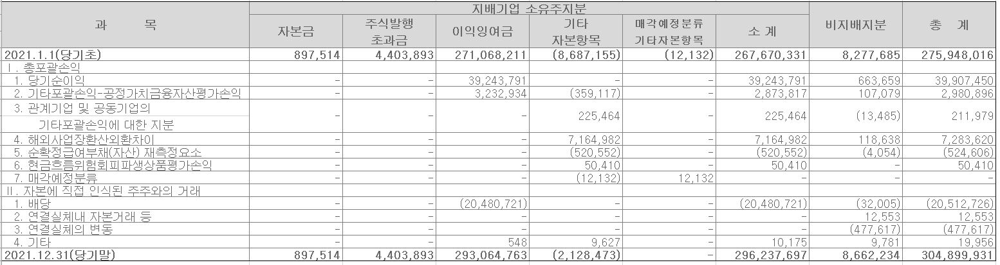

기업이 정기적으로 작성하여 공시하는 전체재무제표(a complete set of financial statements)에는 재무상태표, 포괄손익계산서, 자본변동표, 현금흐름표와 주석이 포함된다. 재무제표에 어떠한 정보가 공시되어 있는지, 재무제표를 구성하고 있는 보고서에 있는 정보들이 어떻게 상호 연결 되어있는지 살펴보자.
2.1 재무상태표
재무상태표(statement of financial position)는 오랫동안 대차대조표(balance sheet)로 불렸다. 대차대조표라는 명칭은 회계에서 거래를 기록하는 방식인 복식부기(double entry bookkeeping)에서 거래를 기록하는 계정(account)의 오른쪽에 해당하는 “대변(credit)”과 계정의 왼쪽을 의미하는 “차변(debit)” 항목 들을 일목요연하게 정리한 보고서라는 의미다. 영어 표현인 “balance sheet”는 차변과 대변의 균형, 즉, 차변 계정(자산)의 합과 대변 계정(부채와 자본)의 합이 일치한다는 의미이다.
하지만, 회계를 처음 접하는 사람들에게는 대차대조표가 어떤 정보를 제공하는지 이름만으로는 가늠하기 어려웠다. 요즈음에는 기업의 재무상태(financial position or financial condition)를 나타내는 보고서라는 의미로 “재무상태표”라는 용어가 자리를 잡았다. 국제회계기준에서 재무상태표라는 표현을 사용하고 있지만, 기업이 재무상태표 대신 대차대조표라는 명칭을 사용하여도 국제회계기준에 위배되지 않는다. 어떤 명칭을 사용하던 지 재무상태표는 어떤 특정 시점에 즉 재무 보고 기간 말 기업의 자산, 부채, 자본을 보고한다.
국제회계기준위원회(IASB, International Accounting Standards Board)에서 발간한 “재무보고를 위한 개념체계” 에서는 자산, 부채, 자본을 다음과 같이 정의하고 있다.1
재무상태표를 구성하고 있는 세 가지 요소의 정확한 개념에 대한 상세한 설명 대신 여기에서는 재무 정보의 활용에 초점을 맞추어 재무상태표의 세 가지 구성 요소의 개략적인 의미만 살펴보기로 한다.
자산은 기업이 사업에 활용할 수 있는 재산이나 권리라고 보면 된다. 자산의 개념에서 법적 소유권(ownership)은 꼭 필요하지 않다. 소유권이 없더라도 자산을 사용할 수 있는 권리가 있으면 자산으로 볼 수 있다. 예를 들면, 항공사가 항공기를 구매하는 대신 장기리스계약을 통해 항공기를 사용할 권리를 확보하였다면, 그 항공기에 대해 법률적 의미의 소유권은 없지만, 미래의 경제적 효익을 얻을 수 있는 사용권(right-of-use)을 확보하였으므로 재무상태표에 자산으로 보고한다. 대한항공은 대부분의 항공기를 직접 구매하는 대신 장기리스를 통해 확보하고 있다. 리스한 항공기의 사용권 자산이 총 유형자산의 절반에 육박한다. 2
자산은 과거의 거래나 그 밖의 사건의 결과이다. 따라서, 아직 일어나지 않은 거래나 사건은 자산으로 보고할 수 없다. 또한, 자산은 유형의 것일 필요가 없다. 최근에는 기계나 건물과 같은 유형자산보다는, 특허권이나 전파사용권 같은 무형의 자산이 기업의 핵심 자산인 경우가 많다. SK텔레콤은 2022년 무형자산에 해당하는 주파수이용권 2조 824억 원을 보고하고 있다.
부채는 기업의 의무로 차입금, 미지급 비용, 선수금 등을 포함한다. 기업에 자금을 대여한 금융기관, 기업이 발행한 회사채에 투자한 기관과 개인투자자, 기업에 외상으로 부품을 제공한 공급업자 등이 기업의 채권자이다. 주주와 달리 채권자는 계약으로 확정된 시기에 이자와 원금 등의 채권을 회수한다. 이러한 명시적인 계약에 의한 채무 이외에 종업원 퇴직 시에 기업이 지급하기로 약정한 퇴직금 그리고 자산의 사용 후 원상 복구에 들리라고 예상하는 금액도 부채이다. 한국전력공사는 원자력발전소의 사후 처리 복구에 들리라고 예상하는 금액을 비유동 충당부채로 보고하고 있다.
자본은 잔여지분(residual interest)이라고 하는데, 측정의 관점에서 본다면 자산에서 부채를 우선 차감한 후 남아 있는 금액으로 산정한다. 따라서, 자본을 순자산(net assets)이라고 부르기도 한다. 자본은 주주가 기업에 최초로 그리고 그 이후에 추가로 투자한 금액, 기업이 설립 이후에 벌어들인 총이익 중 배당하지 않고 기업 내부에 유보한 금액을 포함한다.
재무상태표 자본의 장부가격(book value of equity)은 자본의 시장가치(market value of equity)인 시가총액(market capitalization)과 일반적으로 차이가 난다. 삼성바이오로직스의 경우, 2017년 말 주당순자산은 6만 원가량이지만 2017년 감사보고서가 공시된 2018년 3월14일 실제 거래되는 주식가격은 44만 5천 원 이었다. 분식회계 논란이 시작된 2018년 5월 초에는 주가가 35만 원 대로 떨어지기도 했지만 자본의 시장가치는 장부가격보다 월등히 높았다.
재무상태표의 세 가지 구성요소 간 관계는 재무상태표 등식(balance sheet equation) 또는 회계의 기본등식(fundamental equation of accounting)으로 표현한다.
\[\textbf{자산(Assets) = 부채(Liabilities) + 자본(Equity)}\]
자본 (또는 순자산)의 관점에서 회계의 기본등식을 자본 = 자산 \(-\) 부채 로 표현할 수도 있다.
삼성전자의 2021년 말 재무상태표에서 이 기본등식을 확인해 보자.
자산 (426.6조 원) = 부채 (121.7조 원) + 자본 (304.9조 원)
또는
자본 (304.9조 원) = 자산 (426.6조 원) − 부채 (121.7조 원)
2021년 말 삼성전자의 자본 304.9조 원의 세부 항목은 다음과 같다.
| 자 본 | 단위(백만원) | |
|---|---|---|
| 지배기업 소유주지분 | 296,237,697 | |
| Ⅰ. 자본금 | 897,514 | |
| 1. 우선주자본금 | 119,467 | |
| 2. 보통주자본금 | 778,047 | |
| Ⅱ. 주식발행초과금 | 4,403,893 | |
| Ⅲ. 이익잉여금 | 293,064,763 | |
| Ⅳ. 기타자본항목 | (2,128,473) | |
| 비지배지분 | 8,662,234 | |
| 자 본 총 계 | 304,899,931 |
주주가 회사에 납입한 자본금 총액과 회사가 설립 이후 벌어들인 이익 중 배당으로 지급하지 않고 기업 내부에 유보한 금액을 구분해 보자. 주주가 기업에 투자한 자금은 자본금(액면금액)과 주식발행초과금(주식의 발행가액이 액면금액을 초과한 금액)의 합으로 계산할 수 있다. 이익잉여금과 기타자본항목은 회사 내부유보금이다.
그러면, 자본의 항목으로 보고하는 비지배지분(non-controlling interest)은 무엇일까? 이는 과거에 소액주주지분(minority interest)으로 불리던 것으로, 삼성전자의 종속회사 중 삼성전자가 100% 지분을 가지고 있지 않지만, 지배권을 행사하는 종속회사의 지분 중 모기업이 소유하고 있지 않은 부분이다. 예를 들면, 2021년 말 삼성전자의 연결재무제표에 포함된 종속회사의 하나인 삼성디스플레이의 경우 삼성전자의 지분율은 84.8%였다. 따라서, 나머지 15.2%는 삼성전자가 아닌 다른 기업이나 개인이 삼성디스플레이의 주식을 소유하고 있었다. 이러한 기업이나 개인 주주들은 삼성전자의 종속회사인 삼성디스플레이의 주주이기는 하나 지배력이 없는 비지배주주(non-controlling shareholders)이다.
2021년 삼성전자의 총자본 중 8.7조 원은 종속회사를 부분 소유한 비지배주주의 몫에 해당한다. 엄밀히 말하면, 삼성전자 연결 재무상태표상의 비지배지주주지분은 삼성전자 주주자본과는 성격이 다르다. 그렇다고 다른 부채와 동일시 하기도 어렵다. 삼성전자 회사의 처지에서 본다면 비지배주주지분에 대해서도 상환의무가 없으므로 부채와 확연히 구별된다. 어떻게 보면 애매한 성격이어서, 예전 미국회계기준에서는 이를 부채와 자본의 중간에 별도 항목으로 보고하였다. 삼성전자의 경우 총자본에서 비지배주주지분이 차지하는 비율은 2.8%로 미미한 수준이다.
비지배주주지분은 종속회사와 관련이 있으므로, 종속회사가 없는 기업에는 비지배주주지분이 재무상태표의 자본에 표시되지 않는다. 그렇다면, 비지배주주지분이 자본에 없는 기업은 종속기업이 없다고 결론을 낼 수 있을까? 여러분이 생각해 보기 바란다.3
우리나라 기업 대부분은 (미국 기업도 유사) 재무상태표에 자산, 부채, 자본의 순서로, 그리고 자산과 부채는 유동자산, 유동부채를 비유동자산, 비유동부채에 앞서 보고한다.4
국제회계기준에서는 자산과 부채를 유동 또는 비유동으로 구분할 것을 요구하지만, 유동자산을 비유동자산보다 먼저 보고 한다던 지, 유동자산 중에 가장 유동성(liquidity) 또는 환금성이 높은 자산인 현금과 현금성자산을 먼저 보고하도록 요구하지는 않는다. 따라서, 자본을 부채에 앞서 보고한다든 지 비유동자산을 유동자산보다 앞서 보고하는 것도 가능하다. 국제회계기준의 재무제표 표시의 예시(IAS 1 참조)에서는 이러한 순서를 따르고 있다. 우리나라에서도 이런 표시 방식을 따르는 회사가 드물지만 있다. 예를 들면, 이건산업의 2017년 재무상태표는 다음과 같다.
| 과 목 | 2017년 12월 31일 | |
|---|---|---|
| 자 산 | ||
| I. 비유동자산 | 318,177,776,392 | |
| 유형자산 | 228,305,530,366 | |
| 무형자산 | 1,273,752,209 | |
| 투자부동산 | 12,106,644,500 | |
| 생물자산 | 73,035,212,341 | |
| 기타금융자산 | 2,193,331,501 | |
| 이연법인세자산 | 1,112,205,204 | |
| 기타채권 | 151,100,271 | |
| II. 유동자산 | 121,105,342,355 | |
| 재고자산 | 43,603,912,488 | |
| 매출채권및기타채권 | 58,707,319,390 | |
| 기타금융자산 | 3,014,985,217 | |
| 기타유동자산 | 2,560,815,987 | |
| 파생상품자산 | 857,650 | |
| 현금및현금성자산 | 13,217,451,623 | |
| 자 산 총 계 | 439,283,118,747 | |
| 자 본 | ||
| I. 지배기업소유주지분 | 152,326,956,448 | |
| 자본금 | 46,867,625,000 | |
| 자본잉여금 | 1,279,356,881 | |
| 자기주식 | -1,132,812,897 | |
| 기타자본 | -14,951,665,284 | |
| 기타포괄손익누계액 | 6,734,201,038 | |
| 이익잉여금 | 113,530,251,710 | |
| II. 비지배지분 | 1,018,254,719 | |
| 자 본 총 계 | 153,345,211,167 | |
| 부 채 | ||
| I. 비유동부채 | 106,969,993,066 | |
| 전환사채 | 8,979,238,465 | |
| 장기차입금 | 41,497,889,041 | |
| 확정급여부채 | 12,198,414,486 | |
| 이연법인세부채 | 36,537,639,231 | |
| 기타비유동부채 | 1,161,717,078 | |
| 파생상품부채 | 6,595,094,765 | |
| II. 유동부채 | 178,967,914,514 | |
| 단기차입금 | 85,259,918,382 | |
| 유동성장기부채 | 24,209,544,152 | |
| 미지급법인세 | 2,091,611,116 | |
| 매입채무및미지급금 | 60,214,111,299 | |
| 기타유동부채 | 7,154,916,407 | |
| 파생상품부채 | 37,813,158 | |
| 부 채 총 계 | 285,937,907,580 | |
| 자 본 및 부 채 총 계 | 439,283,118,747 |
정리하면, 재무상태표는 어떤 특정 시점 (연간 보고기간 말)에 기업의 재무상태 즉, 자산, 부채, 자본에 대한 정보를 제공한다. 함께 보고하는 지난 년도 기말의 재무상태와 비교를 통해 재무상태가 호전되었는지 악화되었는지 확인할 수 있다.
2.2 포괄손익계산서
기업이 보고기간 동안 달성한 재무성과에 대한 보고서가 포괄손익계산서다. 재무성과를 측정하는 두 가지 요소는 수익과 비용이다. 수익(revenue)은 자산의 증가 또는 부채의 감소로서 자본의 증가를 가져오며, 자본청구권 보유자의 출자와 관련된 것을 제외한다.5 비용(expense)은 자산의 감소 또는 부채의 증가로서 자본의 감소를 가져오며, 자본청구권 보유자에 대한 분배와 관련된 것을 제외한다. 출자로 인한 자본 증가는 수익이 아니며 배당으로 인한 자본의 감소는 비용이 아니다. 따라서, 자본청구권 보유자와의 거래는 재무성과의 측정과 보고에 포함하지 않는다.
포괄손익계산서(statement of comprehensive income)에는 보고기간 동안의 기업의 경영(영업 및 비영업) 성과에 대한 보고서로, 이에는 포괄손익(comprehensive), 그 구성요소, 주당손익 등에 관한 정보가 포함되어 있다. 포괄손익보고서의 가장 마지막에 제시되는 항목인 (총)포괄손익은 손익(profit or loss)과 기타포괄손익(other comprehensive income)의 합이다.
\[\textbf{포괄손익 = 손익 + 기타포괄손익}\]
손익(profit or loss)은 순이익(net income)으로 종종 지칭되는데, 이는 수익에서 비용을 차감하여 계산한다. 기타포괄손익(other comprehensive income)은 손익을 구성하는 항목은 아니지만 포괄손익을 구성하는 항목이라는 의미다. 즉, 기타포괄손익은 손익 계산에는 포함하지 않는 항목이지만 포괄손익의 일부분이므로 자본(equity)에 직접적인 영향을 미치는 항목들이다. 기타포괄손익은 현행가치의 변동과 관련된 항목으로 회계기준에서 지정한 항목이다. 국제회계기준에서 정하고 있는 기타포괄손익항목은 다음과 같다.
- 재평가잉여금의 변동
- 확정급여제도의 재측정요소
- 해외사업장의 재무제표 환산으로 인한 손익
- 기타포괄손익-공정가치로 측정하는 지분금융자산의 투자손익
(4-1) 기타포괄손익-공정가치로 측정하는 채무금융자산의 재측정손익 - 기타포괄손익-공정가치로 측정하는 지분상품투자에 대한 위험회피에서위험회피수단의 평가손익중 효과적인 부분과 현금흐름위험회피에서위험회피수단의 평가손익 중 효과적인 부분
- 당기손익-공정가치 측정 항목으로 지정한 특정 부채의신용위험 변동으로 인한 공정가치 변동 금
- 옵션계약의 내재가치와 시간가치를 분리할 때와 내재가치의 변동만을 위험회피수단으로 지정할 때 옵션 시간가치의 가치변동
- ① 선도계약의 선도요소와 현물요소를 분리하고 현물요소의 변동만 위험회피수단으로 지정할 때 선도계약의 선도요소의 가치변동과 ② 금융상품의 외화 베이시스 스프레드 가치 변동을 위험회피수단 지정에서 제외할 때 외화 베이시스 스프레드의 가치 변동
한편, 포괄손익은 보고기간 동안 자본(equity)의 변동에서 주주와의 거래로 인한 변동 분을 제외한 부분으로 정의할 수 있다. 주주와의 거래로 인한 자본의 변동에 해당하는 거래의 예로는 배당, 자기주식 취득, 주식 추가 발행으로 인한 자본금의 증가 등이 있다. 포괄손익계산서에서 보고하는 포괄손익(즉, 당기 손익에서 기타포괄손익을 더하여 계산) 금액과 포괄손익의 정의에 기반하여 추론한 금액(비교재무상태표나 자본변동표에서 계산할 수 있음)이 동일하다면, 순증회계관계(clean surplus relation)가 성립하는 경우이다. 순증회계관계가 성립하는 경우 자본의 변동, 보고된 포괄손익, 순배당 간에는 다음의 관계가 성립한다.
자본의 변동 = 포괄손익 – 순배당 (주주와의 거래, 즉, 배당 (자기주식취득 포함) 에서 신주발행액 차감)
하지만, 정의에 기반하여 추론한 포괄손익 금액은 기업이 포괄손익계산서에 보고하는 수치와 일치하지는 않는 경우가 종종 있다. 예를 들면, 전기 손익수정 금액은 당기의 포괄손익에서 조정이 되지 않고 이익잉여금에서 직접 조정이 되어, 개념적으로는 포괄손익에 포함 되어야 하나, 포괄손익계산서에 보고되지 않는다. 즉, 비순증항목(dirty surplus items)은 순증회계관계의 성립을 방해한다. 비순증항목과 기타포괄손익항목은 다른 개념이다.
포괄손익계산서에서 비용을 분류하여 표시하는 방법에는 두 가지가 있다. 비용의 기능별 분류법(by function)과 성격별 분류법(by nature)이다. 대부분의 기업은 비용을 기능에 따라 분류하여 표시한다.
기능별 분류법에서는 비용을 성격이 아니라 비용의 역할 또는 담당하는 기능에 따라 분류 표시한다. 예를 들면, 동일 성격의 감가상각비용이라도 제조설비의 감가상각비는 매출원가(제조원가로 집계되고 향후 판매가 이루어 질 때)로 분류하지만, 사무실에서 사용하는 업무용 복사기의 감가상각비는 판매관리비로 분류한다. 즉, 고정자산의 감가상각비라는 동일한 성격의 비용이지만 담당하는 기능 또는 역할이 다르기에 분류를 달리해서 보고한다. 다른 예로는, 퇴직급여비용 중 공장조립라인에서 일하는 근로자의 퇴직급여비용은 매출원가(제조원가)로 분류하고, 사무실에서 일하는 직원의 퇴직급여비용은 판매관리비로 분류하여 보고한다. 한편, 비용의 성격별 분류법은 ’매출원가’법으로 부르기도 한다. 성격별 분류에서는 매출에서 매출원가를 차감하여 매출총이익을 보고하고 여기에서 판매관리비를 차감하여 영업이익을 보고한다. 기능별 분류에서는 매출총이익을 따로 보고하지 않는다.
그러면, 기업에서는 어떠한 비용 분류 방법을 사용하는 것이 좋을까?
비용의 기능별 분류방법은 재무제표의 사용자에게 익숙한 형식일 뿐만 아니라, 여러 가지 기업 의사결정에 유용한 정보를 제공하는 반면, 비용의 성격별 분류방법은 자의적인 비용의 배분 등이 배제 되어 명확하고, 적용이 쉬울 뿐 아니라, 미래현금흐름을 예측하는데 유용하다는 장점이 있다. 따라서, 국제회계기준에서는 기업이 비용의 기능별 분류를 채택한 경우에는 주석에 성격별 분류에 관한 정보를 추가적으로 제공하도록 규정하고 있다. 대부분의 기업은 포괄손익계산서에 비용을 기능별로 분류하는 방식을 채택하고 있다.
예를 들면, 삼성전자는 비용의 기능적 분류법을 손익계산서에서 사용하고 있는데, 주석 21에 성격적 분류 항목과 관련한 정보를 추가로 제공하고 있다. 손익계산서에서 처럼 매출원가와 판매관리비로 구분하지 않고 비용의 성격에 따라 집계하고 있다.
| 삼성전자 | (단위 : 백만원) | ||
|---|---|---|---|
| 과 목 | 주 석 | 당 기 | 전 기 |
| Ⅰ. 매 출 액 | 29 | 279,604,799 | 236,806,988 |
| Ⅱ. 매 출 원 가 | 21 | 166,411,342 | 144,488,296 |
| Ⅲ. 매 출 총 이 익 | 113,193,457 | 92,318,692 | |
| 판매비와관리비 | 21, 22 | 61,559,601 | 56,324,816 |
| Ⅳ. 영 업 이 익 | 29 | 51,633,856 | 35,993,876 |
| 21. 비용의 성격별 분류: | |||
| 구 분 | 당 기 | 전 기 | |
| 제품 및 재공품 등의 변동 | -4,517,560 | -3,234,887 | |
| 원재료 등의 사용액 및 상품 매입액 등 | 95,625,437 | 81,792,130 | |
| 급여 | 28,207,782 | 25,054,684 | |
| 감가상각비 | 31,285,209 | 27,115,735 | |
| 무형자산상각비 | 2,962,152 | 3,219,881 | |
| 복리후생비 | 5,073,002 | 4,655,347 | |
| 유틸리티비 | 4,928,929 | 4,717,553 | |
| 외주용역비 | 5,594,602 | 5,409,889 | |
| 광고선전비 | 5,376,015 | 4,269,043 | |
| 판매촉진비 | 6,286,159 | 5,861,954 | |
| 기타비용 | 45,788,872 | 40,661,604 | |
| 계(*) | 227,970,943 | 200,813,112 | |
| (*) 연결손익계산서 상 매출원가와 판매비와관리비를 합한 금액입니다. |
판매비와관리비 61,559,601백만원에는 감가상각비가 1,529,507 백만원이 포함되어 있는데, 주석 21에서는 비용의 성격별 분류를 적용할 때, 감가상각비 31,285,209 백만원을 보고 하고 있다. 이 두 금액의 차이에 해당하는 감가상각비는 매출원가에 포함되어 있다. 다음에 설명할 현금흐름표를 간접법을 사용하여 작성 할 때 어느 금액을 손익의 조정에 사용하여야 할까?
한국채택국제회계 기준에서는 국제회계기준에는 규정이 따로 없는 영업이익을 포괄손익계산서에 보고하도록 요구하고 있다. 기능별로 비용을 분류하는 경우에는 영업이익은 매출수익에서 매출원가와 판매비와일반관리비를 차감하여 계산을 한다. 성격별로 분류하는 경우에는 영업수익에서 영업비용을 차감하여 계산한다. 어떤 항목이 영업이익에 포함되어야 하는지는 명확히 규정하기 어렵기 때문에, 기업에서는 영업이익을 구성하는 항목과 금액을 보고하여야 한다. 재무제표의 사용자의 입장에서는 영업이익을 구성하는 항목이 무엇인가에 대해 비판적으로 분석을 수행하는 것이 필요하다.
포괄손익계산서를 작성하는데, 단일 보고서 대신 이를 쪼개서 두 가지 보고서를 작성하는 경우가 많다. 손익계산서를 별도로 작성 보고할 떄는 포괄손익을 표시하는 보고서에는 당기손익(profit or loss) 금액에서 시작하여 기타포괄손익(other comprehensive income) 부분만을 자세히 보고한다.
삼성전자의 경우에도 손익계산서와 포괄손익계산서를 각각 작성하는 두 가지 보고서 형식을 취하고 있는데, 2021년 삼성전자의 포괄 손익계산서는 당기순이익 42,186,747 백만 원에서 시작하여 기타포괄손익 (5,502,257) 백만 원의 명세를 제시하고 마지막으로 포괄손익 36,684,490 백만 원을 보고하고 있다. 포괄손익은 다시 두 부분으로 나뉘어져 있다. 지배기업 소유주지분(owner of the parent) 35,887,505 백만 원과 비지배지분(non-controlling interests) 796,985 백만 원으로 구분하고 있다.
| 삼성전자주식회사와 그 종속기업 | (단위 : 백만원) | |
|---|---|---|
| 과 목 | 당 기 | 전 기 |
| Ⅰ.연결당기순이익 | 39,907,450 | 26,407,832 |
| Ⅱ.연결기타포괄손익 | 10,002,299 | (3,673,905) |
| 후속적으로 당기손익으로 재분류되지 않는 포괄손익 | 2,508,106 | 1,788,764 |
| 1. 기타포괄손익-공정가치금융자산평가손익 | 2,980,896 | 2,502,733 |
| 2. 관계기업 및 공동기업의 기타포괄손익에 대한 지분 | 51,816 | 5,591 |
| 3. 순확정급여부채(자산) 재측정요소 | (524,606) | (719,560) |
| 후속적으로 당기손익으로 재분류되는 포괄손익 | 7,494,193 | (5,462,669) |
| 1. 관계기업 및 공동기업의 기타포괄손익에 대한 지분 | 160,163 | (48,888) |
| 2. 해외사업장환산외환차이 | 7,283,620 | (5,380,375) |
| 3. 현금흐름위험회피파생상품평가손익 | 50,410 | (33,406) |
| Ⅲ. 총포괄손익 | 49,909,749 | 22,733,927 |
| 배기업 소유주지분 | 49,037,912 | 22,374,398 |
| 비지배지분 | 871,837 | 359,529 |
당기손익의 경우에도 지배기업 소유주지분과 비지배지분으로 나누어 보고 하고 있다.
| 과 목 | 당 기 | 전 기 |
|---|---|---|
| Ⅵ. 당 기 순 이 익 | 39,907,450 | 26,407,832 |
| 지배기업 소유주지분 | 39,243,791 | 26,090,846 |
| 비지배지분 | 663,659 | 316,986 |
포괄손익계산서의 당기손익 중 지배기업의 주주 (즉, 소유자) 에게 귀속되는 부분은 이익잉여금에 누적이 되고, 기타포괄손익 중 지배기업의 주주에게 귀속되는 부분은 기타포괄손익누계액에 누적된다. 비지배주주에 귀속되는 부분은 자본의 비지배주주지분에 누적된다. 비지배주주지분의 경우 당기손익과 기타포괄손익을 구분하여 따로 누적을 하지않는다.
포괄손익계산에 표시되는 주요 항목 중 하나는 주당손익(earnings per share or EPS) 항목이다.6 주당손익은 지배주주 중 보통주주에게 귀속되는 손익을 대상으로 한다. 따라서, 기타포괄손익 항목과 비지배주주지분에 귀속되는 항목, 그리고 우선주주에게 귀속되는 손익항목은 주당손익 계산에서 제외한다. 즉, EPS는 보통주주를 중심으로 전통적으로 사용하던 손익에 초점을 맞추어 한 주당 얼마만큼을 벌었는지에 대한 정보를 제공한다.
삼성전자의 2021년 손익계산서의 맨 아래쪽에 포함된 주당이익 정보는 다음과 같다.
| Ⅶ. 주 당 이 익 (단위 : 원) | 당 기 | 전 기 |
|---|---|---|
| 기본주당이익 | 5,777 | 3,841 |
| 희석주당이익 | 5,777 | 3,841 |
주당이익은 기본주당이익(basic EPS)과 희석주당이익(diluted EPS)으로 나뉘어 진다. 희석주당이익은 이익의 희석(dilution) 가능성을 고려하여 주당이익을 계산한 것이다. 이익이 희석이 되면 보통주주에게 돌아가는 이익이 줄어 들게 된다. 보통주주의 입장에서 기업의 손익이 희석되는 경우는 전환사채가 보통주식으로 전환되는 경우, 종업원 주식매수권이 행사되는 경우 등을 들 수 있다. 희석주당이익에서는 이러한 이익의 희석 상황을 “가정”하여 주당이익을 계산한 것이다. 삼성전자의 경우 희석증권을 발행하지 않아서 기본주당이익과 희석주당이익이 동일하다.
다음은 와이지엔터테인먼트의 주당이익의 예이다. 와이지에터테인먼트는 임직원에게 주식결제형 주식선택권를 발행하였다. 주당이익의 계산 시 희석효과를 감안하였다. 계속영업기준으로 2021년 기본주당이익은 380원이고 희석주당이익은 1원 적은 379원이다. 와이지엔터네인먼트의 경우 방송콘텐츠제작 사업부문, 종속기업인 YG Entertainment Japan의 음식점 사업을 2020년 중 매각하였고, 매각예정인 종속기업인 (주)YG푸즈와 코드코스메인터내셔널(주)와 관련한 중단영업의 효과를 따로 보고하고 있다.
| 주 당 이 익 | 2021년 | 2020년 |
|---|---|---|
| 1. 기본주당이익(손실) | ||
| (1)계속영업 기본주당이익 | 380 | 724 |
| (2)중단영업 기본주당손실 | (16) | (205) |
| 2. 희석주당이익(손실) | ||
| (1)계속영업 희석주당이익 | 379 | 719 |
| (2)중단영업 희석주당손실 | (16) | (205) |
2.3 현금흐름표
현금흐름표는 다른 보고서와 달리 현금주의회계(cash basis accounting)를 적용한다. 발생주의회계(accrual basis accounting)가 현금주의회계보다 재무제표 사용자에게 보다 유용한 정보를 제공하지만, 현금기반의 정보가 추가적으로 유용한 정보를 제공하는 경우도 있다. 기업이 부도 위기에 처해 있을 경우에는 기업의 현금흐름(cash flow) 정보가 특히 유용하다. 그리고, 기업의 자금 담당자의 입장에서는 장부상의 이익 수치도 중요하지만, 실제 가지고 있는 현금과 미래에 유입, 유출될 현금 상황을 파악하는 것이 중요하다.
현금흐름표의 기본 형식은 다음과 같다.
| 과 목 | 금 액 |
|---|---|
| (1) 영업활동 현금흐름 (cash flows from operating activities) | xx,xxx |
| (2) 투자활동 현금흐름 (cash flows from investing activities) | xx,xxx |
| (3) 재무활동 현금흐름 (cash flows from financing activities) | xx,xxx |
| 현금의 증감 (changes in cash and cash equivalents) | xx,xxx |
| 가산: 기초 현금 (beginning cash and cash equivalents) | xx,xxx |
| 기말 현금 (ending cash and cash equivalents) | xx,xxx |
현금흐름표는 보고기간 동안의 현금의 증감에 관한 정보를 제공한다. 현금흐름의 증감은 재무상태표에서 기말 현금에서 지난 회계연도의 기말 현금(당기의 기초 현금 보유액에 해당한다)을 차감하여 구할 수 있는데, 현금흐름표의 아래에 보고한다. 현금흐름표의 작성에서도 이를 가장 먼저 확정한다. 보고기간 동안의 현금증감에 영향을 미치는 활동은 세 가지로 분류한다: 영업현금흐름, 투자현금흐름, 재무현금흐름.
영업활동현금흐름(cash flows from operating activities or operating cash flows)은 영업활동을 수행하여 창출한 현금이다. 즉, 재화의 매출과 서비스의 제공과 관련된다. 대부분의 정상적인(?) 이익을 보고하는 기업의 경우, 양(+)의 영업현금흐름 즉, 순 현금유입을 보고한다. 영업현금흐름이 음(–)인 경우는 기업의 영업성과가 정말 좋지 않은 경우이다. 기업이 영업에서 순 현금유입을 창출하는데 장기간 동안 어려움을 겪는다면 계속적인 존속이 어렵게 된다. 신생기업의 경우에는 영업이 정상 괘도에 오르기 전에는 순 현금유입을 창출하는데 어려움을 겪게 된다. 일반적으로 손익계산서에서 이익(profit)을 보고하는 기업은 현금흐름표에서도 보통 양(+)의 영업활동 현금흐름을 보고한다. 그렇지만, 손실(loss)을 보고하는 기업이 모두 음(–)의 영업활동 현금흐름 또는 영업으로부터의 순 현금유출을 보고하지는 않는다. 현금 지출을 동반하지 않는 비용 항목들로 인해, 손실이 크지 않은 경우에는, 여전히 영업으로부터의 순 현금유입을 보고할 수 있다. 현금 지출을 동반하지 않는 비용의 대표적인 것이 유/무형 고정자산에 대한 감가상각비를 들 수 있다. 다른 예도 생각해보기 바란다. 영업활동현금흐름은 손익계산서에서의 손익을 현금주의회계를 적용하여 순 현금흐름으로 변환한 것으로 볼 수 있다.
투자활동 현금흐름(cash flows from investing activities or investing cash flows)은 기업의 투자활동으로 인한 현금의 유출과 유입을 나타낸다. 투자활동이 활발한 성장기 기업뿐 아니라, 대부분의 기업에서 대체 투자가 필요하기 때문에 투자활동 현금흐름은 순 현금유출인 경우가 많다. 즉, 투자활동 현금흐름은 음(–)인 경우가 일반적이다. 따라서, 어떤 기업이 양(+)의 투자활동 현금흐름을 보고하는 경우는, 그 이유를 면밀히 검토할 필요가 있다. 그런 기업이 고정자산을 대량으로 처분한 경우라면, 어떠한 상황인지 파악할 필요가 있다. 재무상태가 좋지 않은 기업이 추가 현금확보를 위해 고정자산의 매각을 실시하였다면, 양(+)의 투자활동 현금흐름을 보고할 수 있게 된다. 하지만, 투자자의 입장에서는 그런 기업의 재무상태를 주의 깊게 살펴 볼 필요성이 있다.
재무활동 현금흐름(cash flows from financing activities or financing cash flows)에는 기업의 재무활동 즉, 자금조달 관련 활동으로 인한 현금의 유입과 유출을 보고한다. 기업이 자금을 조달하는 방법은 크게 차입(회사채 발행 포함)과 주식발행으로 나눌 수 있다. 차입하거나 새로 주식을 발행할 때는 현금 유입이 일어나고, 차입금을 상환하거나 주주에게 배당하는 경우에는 현금 유출이 일어난다. 따라서, 재무활동으로 인한 현금흐름은 대규모 차입을 하는 경우에는 양(+)이겠지만, 차입금의 상환이 대규모로 일어나는 경우에는 음(–)이 될 것이다. 따라서, 재무활동현금흐름은 기업의 상황에 따라서 순 현금유입일 수도 있고 순 현금유출일 수도 있다.
다음은 2021년 삼성전자의 요약 현금흐름표이다 (단위: 백만원).
| 과 목 | 당 기 | 전 기 |
|---|---|---|
| Ⅰ. 영업활동 현금흐름 | 65,105,448 | 65,287,009 |
| Ⅱ. 투자활동 현금흐름 | (33,047,763) | (53,628,591) |
| Ⅲ. 재무활동 현금흐름 | (23,991,033) | (8,327,839) |
| Ⅳ. 매각예정분류 | 139 | (139) |
| Ⅴ. 외화환산으로 인한 현금의 변동 | 1,582,046 | (833,861) |
| Ⅵ. 현금및현금성자산의 증가(감소) | 9,648,837 | 2,496,579 |
| Ⅶ. 기초의 현금및현금성자산 | 29,382,578 | 26,885,999 |
| Ⅷ. 기말의 현금및현금성자산 | 39,031,415 | 29,382,578 |
앞에서 설명한 바와 같이, 기초와 기말의 현금및현금성자산은 재무상태표에서 확인할 수 있다. 삼성전자의 현금흐름표에는 앞의 기본 원형에는 없던 항목이 있다. 외화환산으로 인한 현금의 변동분(effect of exchange rate changes) 330,070백만원이 추가로 표시가 되어 있다. 예를 들면, 기업이 보유한 외화 표시 예금을 원화로 변환하여 보고할 경우에, 환율의 변동으로 표시되는 금액이 차이가 날 수 있다. 예를 들면, 미화 $100을 보고기간 동안 보유한 기업을 생각해보자. 다른 활동이 전혀 없다고 가정을 하면, 미화로 표시한 현금의 변화는 $0일 것이다. 하지만, 미화를 원화로 변환을 한다고 하면, 환율의 변동으로 인해 표시금액이 차이가 생기게 될 것이다. 만일 원화 가치가 2017년동안 하락하였다면 기말에 표시되는 $100의 원화가치는 전기 말에 보고한 금액보다 적게 될 것이다. 이 경우 현금의 감소 분은 외화환산으로 인한 환율변동효과로 표시 된다.7
현금흐름표의 영업활동 현금흐름 부분은 두 가지 방법을 사용하여 작성을 할 수 있다. 직접법(direct method)과 간접법(indirect method)이 있는데, 많은 기업들이 간접법을 사용한다. 어떠한 방법을 사용하든지 보고하는 영업활동 현금흐름액은 동일하다. 간접법에서는 손익에서 출발하여 현금의 유출이 없는 비용의 차감, 영업활동관련 자산과 부채의 조정 등을 통해 영업활동에서 벌어들인 현금흐름을 계산한다. 직접법에서는 손익계산서의 각 항목을 관련된 현금흐름으로 직접 변환한다.
다음의 간단한 예를 살펴보자. 손익계산서와 기타 관련 추가정보는 다음과 같다.
| 과 목 | 금 액 |
|---|---|
| 상품매출 | ₩ 20,000 |
| 매출원가 | (15,000) |
| 매출총이익 | ₩ 5,000 |
| 감가상각비 | 500 |
| 판매관리비 | 1,500 |
| 영업이익 | ₩ 3,000 |
| 이자비용 | (1,200) |
| 법인세 차감 전 이익 | ₩ 1,800 |
| 법인세 비용 | (800) |
| 당기순이익 | ₩ 1,000 |
추가 정보:
외상매출금의 감소: 200
외상매입금의 증가: 260
재고의 감소: 40
판매관리비와 이자비용은 모두 현금으로 지불되었다.
미지급 법인세 감소: 100
직접법을 사용하여 현금흐름표를 작성을 하면 다음과 같다.
| 과 목 | 금 액 |
|---|---|
| 고객으로부터 수취한 현금 | ₩ 20,200 |
| 상품 공급자에 지불한 현금 | (14,700) |
| 감가상각비로 인한 현금 지출 | - |
| 판매관리비로 지출한 현금 | (1,500) |
| 이자비용으로 지출한 현금 | (1,200) |
| 법인세 납부액 | (900) |
| 영업활동 현금흐름 | ₩ 1,900 |
간접법을 사용하여 영업활동현금흐름을 작성하면 다음과 같다.
| 과 목 | 금 액 | |
|---|---|---|
| 당기순이익 | ₩ 1,000 | |
| 현금의 유출이 없는 비용 가산: | ||
| 감가상각비 | 500 | |
| 영업용 자산과 부채의 조정: | ||
| 외상매출금 감소 | ₩ 200 | |
| 외상매입금의 증가 | 260 | |
| 재고자산의 감소 | 40 | |
| 미지급법인세의 감소 | (100) | 400 |
| 영업활동 현금흐름 | ₩ 1,900 |
앞서 설명한 바와 같이 어떠한 방법을 사용하든지 영업활동 현금흐름은 1,900으로 계산되고 보고된다. 간접법에서는 현금 유출이 동반되지 않는 비용인 감가상각비를 당기 손익의 조정항목으로 가산하고 있는데, 직접법에서는 현금 유출이 없으므로 따로 보고를 하지 않는다.
국제회계기준에서는 직접법을 사용할 것을 권장하고 있지만, 대부분의 기업은 간접법을 사용하여 영업활동 현금흐름을 보고한다. 투자활동과 재무활동으로 인한 현금흐름은 성격상 모두 직접법에 해당한다고 보면 된다.
마지막으로, 현금흐름표 상의 현금은 엄밀하게 이야기하면 “현금및현금성자산”을 대상으로 하고 있다. 현금성자산(cash equivalents)은 현금은 아니지만 유동성(환금성)의 측면에서 볼 때 유동성이 매우 높아서 현금으로의 전환이 쉽고 이자율이 변동되더라도 만기가 얼마 남지 않아서 가치변동의 위험이 경미하여 현금(보유 현금과 요구불예금)과 따로 구분할 실익이 없는 단기금융자산이다. 따라서, 재무상태표에서도 현금과 현금성자산을 한 묶음으로 보고한다. 현금흐름표에서도 현금및현금성자산을 대상으로 현금의 입출금을 보고한다. 지분상품이 아닌 단기 투자상품, 예를 들면, 국고채, CD나 MMF 등에 투자한 금액이 이에 해당한다. 일부 기업은 단기 차입금 중 기업 현금관리의 일부를 구성하는 당좌차월(bank overdraft)이 있는 경우가 있는데, 현금흐름표 작성의 목적으로 사용하는 현금의 정의에 당좌차월을 포함하는 경우도 있다.
2.4 자본변동표
자본 변동표는 보고기간 동안의 자본(equity) 항목의 변동을 보고한다.
삼성전자가 2021년 재무상태표에서 보고하고 있는 자본은 다음과 같다.
| 과 목 | 당 기 | 전 기 |
|---|---|---|
| 지배기업 소유주지분 | 296,237,697 | 267,670,331 |
| Ⅰ. 자본금 | 897,514 | 897,514 |
| 1. 우선주자본금 | 119,467 | 119,467 |
| 2. 보통주자본금 | 778,047 | 778,047 |
| Ⅱ. 주식발행초과금 | 4,403,893 | 4,403,893 |
| Ⅲ. 이익잉여금 | 293,064,763 | 271,068,211 |
| Ⅳ. 기타자본항목 | (2,128,473) | (8,687,155) |
| Ⅴ. 매각예정분류기타자본항목 | - | (12,132) |
| 비지배지분 | 8,662,234 | 8,277,685 |
| 자 본 총 계 | 304,899,931 | 275,948,016 |
비지배지분을 제외할 때, 지배기업 소유주지분은 자본금(주식의 액면가(par value)에 해당), 주식발행초과금(additional paid-in capital, 발행가와 액면가의 차이 등), 이익잉여금(retained earnings) 과 기타자본항목으로 분류하고 있다. 기타자본항목에는 기타포괄손익누계액(accumulated other comprehensive income), 자기주식(treasury shares) 등의 항목이 포함된다.
삼성전자는 두 가지 종류의 자본증권을 발행하고 있다. 모든 기업이 발행하는 기본 주식인 보통주(ordinary shares or common stock) 외에 우선주(preference shares or preferred stock)도 발행하고 있어서, 이를 따로 보고하고 있다. 기업은 여러 가지 목적으로 자기주식을 취득한다. 주식옵션이 행사되는 경우 새 주식을 발행하는 대신에, 보유한 자기 주식을 교부할 수 있다. 주식교환을 통한 기업의 인수 합병의 경우 자기주식을 교부하기도 한다.
자본금과 주식발행초과금은 기업의 소유주인 주주가 기업에 투자한 금액 또는 납입자본(paid-in capital or contributed capital)으로 추가적인 주식의 발행 등이 없는 한 금액의 변화가 없다. 반면, 기업이 벌어들인 당기 손익과 배당에 영향을 받는 항목에 해당하는 이익잉여금과 기타포괄손익누계액은 자본변동표 상에서 자본의 변화에 영향을 가장 많이 끼치는 항목이다. 이익잉여금은 당기 손익과 배당(dividend)으로 변화하고, 기타포괄손익누적액은 당기의 기타포괄손익 항목에 의해 영향을 받는다.8
이익잉여금의 변동 = 당기 손익 – 배당
기타포괄손익누적액의 변동 = 당기 기타포괄손익
기타포괄손익 항목이 없고, 납입자본의 변화가 없는 경우 자본변동표는 이익잉여금 변동표(statement of retained earnings)에 대응이 된다. 과거에는 자본변동표 대신에 이익잉여금 변동표가 재무제표의 주요 보고서로 간주되던 적도 있었다. 우리나라 기업의 경우에는 이익잉여금과 관련해서 이익잉여금 처분 계산서를 추가적으로 보고하기도 한다. 2021년 삼성전자의 자본변동표는 다음과 같다.
2021년 회계기간 동안 납입자본금 (자본금과 자본잉여금)의 변화는 없다. 이익잉여금은 변화가 있는데, 당기순이익 39,243,791 백만 원, 배당 20,480,721 백만 원, 그리고 기타포괄손익-공정가치금융자산평가손익 3,232,934 백만 원으로 인한 것이다. 당기순이익은 포괄손익계산서에서 금액을 확인할 수 있으니 찾아보기로 하자. 그러면, 배당금액은 어디에서 찾을 수 있을까? 현금흐름표라고 대답 하였다면, 금액을 자세히 확인해 보자.

2.5 과제 및 연습문제
연습문제: KONEX에 상장되어 있는 엔터테인먼트 기업은 2012년 말에 이익잉여금 (1,878,129,362) 를 보고하고 있다. 이익잉여금이 음수(–)인 이유가 무엇일까? 2013년과 2014년에는 배당을 지급하지 않았다. 손익계산서상의 2013년과 2014년의 당기순이익은 876,858,553과 1,908,848,437이었다. 2014년 말의 이익잉여금을 계산하시오.
연습문제: ㈜해운대는 당해 사업연도 동안 다음을 보고 하였다:
이익: 500만 원, 기타포괄손실: 100만 원, 현금배당: 300만 원, 신주발행액: 200만 원
작년 사업연도 말 자본총액이 2,000만 원이라고 할 때 당해 사업연도 말 자본총액을 계산하시오.
과제: Apple 컴퓨터의 대차대조표에 비지배주주지분(noncontrolling interests) 또는 소액주주지분 (minority interests)가 있는지 확인하라. Apple 컴퓨터의 종속회사 상황은 어떠한가?
과제: Apple 컴퓨터는 손익계산서에서 비용항목들을 어떻게 분류하여 보고하고 있는가? 기능별분류 또는 성격별분류? 설명하시오.
과제: 본문의 현금흐름표에서 사용한 간단한 예제에서는 직접법과 간접법을 사용하여 영업활동현금흐름을 계산하였다. 직접법을 사용할 때 고객에게서 수취한 현금 20,200원과 상품 공급자에게 지불한 현금 (14,700)원이 어떻게 계산 되었는지 설명하시오. 법인세 납부액이 법인세 비용으로 손익계산서에 보고한 금액과 다른 이유는?
과제: 이자비용으로 지출한 현금흐름은 영업활동의 현금흐름이 아니라는 견해를 표명하는 경우가 있다. 이런 주장을 하는 근거와 이 경우에는 현금흐름표의 어디에 이자비용으로 인한 현금 지출액을 보고해야 할까? 이자수익의 경우는? 배당금의 지급과 수취에 대해서도 논의를 하시오.
과제: 기업이 발행한 주식을 재매입한 자기주식은 자산인가? 기업이 발행한 채무증권을 재매입한 경우는 어떠한가?
한국회계기준원 홈페이지(http://www.kasb.or.kr/)에 개념체계를 포함한 국제회계기준을 열람할 수 있다.↩︎
대한항공의 2022년 재무상태표에는 유형자산 17.1조 원 중 45%에 해당하는 7.7조가 장기리스계약을 통해 대한항공이 확보한 항공기이다. 대한항공이 법적인 소유권을 가지고 있는 항공기는 2.4조 원으로 리스 사용권자산보다 훨씬 적다.↩︎
종속회사를 100% 소유하는 경우 비지배주주 지분이 없다.↩︎
유동자산은 현금과 현금성자산과 단기 매매목적으로 보유하는 금융자산, 보고기간 후 12개월 (만일 정상영업주기가 12개월을 초과하면 정상영업주기) 이내에 실현되거나, 판매 또는 소비할 의사가 있는 자산이다. 유동부채도 비슷한 기준을 적용한다. 결제일이 보고기간 후 12개월 (또는 정상영업주기) 이내 이거나 단기 매매목적으로 보유하는 부채는 유동부채로 분류한다. 영업주기(operating cycle)는 영업활동에 필요한 자산을 취득한 시점부터 판매등을 통해 그 자산이 현금이나 현금성자산으로 실현되는 시점까지 걸리는 기간이다.↩︎
국제회계기준에서는 수익을 이익(income)으로 지칭하고 있는데 이에는 수익(revenue)과 차익 또는 이득(gain) 등이 포함된다. 마찬가지로, 비용에는 차손 또는 손실(loss)이 포함되는 광의의 의미로 해석한다.↩︎
주당손익 또는 주당이익의 영어 표현에서는 “earnings”이라는 용어가 사용되는데, 회계에서는 “profit or loss”, “net income”, “earnings”이라는 단어가 비슷한 의미로 사용되는 경우가 많다.↩︎
“환율변동으로 인한 미실현손익은 현금흐름이 아니다. 그러나 외화로 표시된 현금및현금성자산의 환율변동효과는 기초와 기말의 현금및현금성자산을 조정하기 위해 현금흐름표에 보고한다. 이 금액은 영업활동, 투자활동 및 재무활동 현금흐름과 구분하여 별도로 표시하며, 그러한 현금흐름을 기말 환율로 보고하였다면 발생하게 될 차이를 포함한다.” (IAS 7.28)↩︎
예를 들면, 자산재평가로 인한 평가증 금액은 재평가적립금(revaluation surplus)으로 누적된다. 그러나, 예외적인 상황도 있다. 확정급여제도(defined benefit plan)를 채택한 기업의 퇴직급여비용의 재측정(remeasurement)관련 비용은 기타포괄 손익항목이지만 누적하지 않고 이익잉여금에서 직접 조정하기도 한다.↩︎